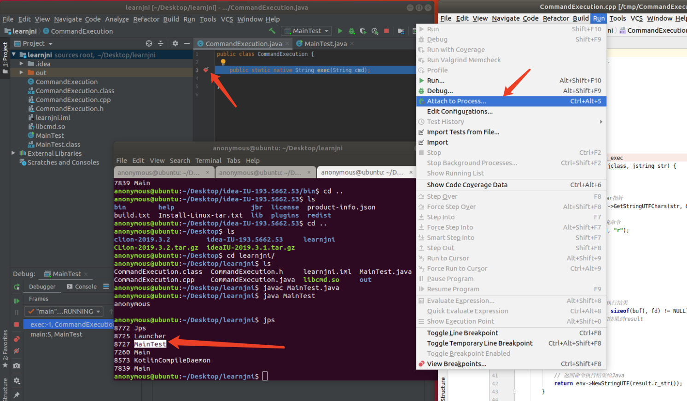
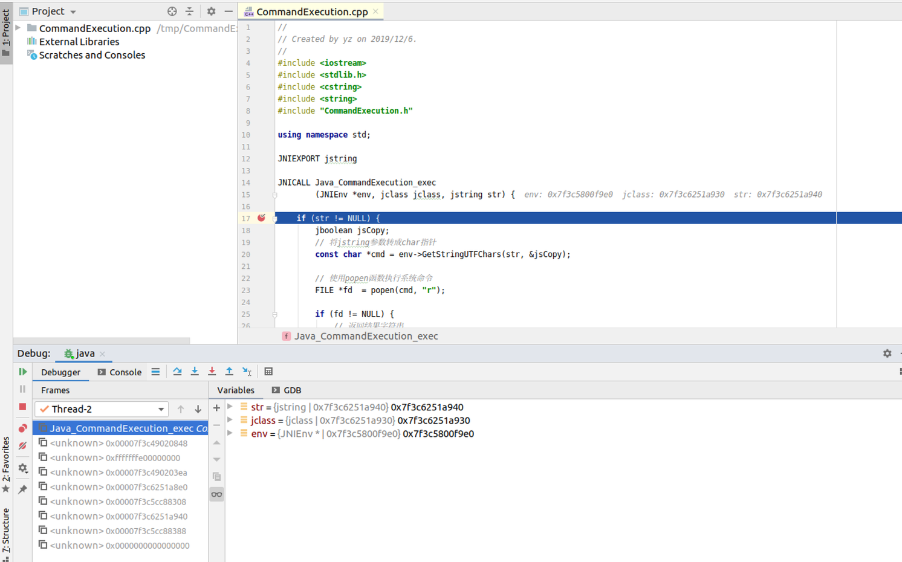

JAVA JNI 执行命令与调试
执行命令
代码基本抄自自园长的demo（为了篇幅省略了作者信息，这里统一说明一下～）
JNI的好处在于底层，实战中可用绕过一些waf拦截吧。
CommandExecution.java
1
2
3
| public class CommandExecution {
public static native String exec(String cmd);
}
|
编译CommandExecution，并生成native层c代码需要用的头文件
1
2
| javac -cp . CommandExecution.java
javah -cp . CommandExecution
|
CommandExecution.cpp
1
2
3
4
5
6
7
8
9
10
11
12
13
14
15
16
17
18
19
20
21
22
23
24
25
26
27
28
29
30
31
32
33
34
35
36
37
38
39
40
41
42
43
44
45
| #include <iostream>
#include <stdlib.h>
#include <cstring>
#include <string>
#include "CommandExecution.h"
using namespace std;
JNIEXPORT jstring
JNICALL CommandExecution_exec
(JNIEnv *env, jclass jclass, jstring str) {
if (str != NULL) {
jboolean jsCopy;
const char *cmd = env->GetStringUTFChars(str, &jsCopy);
FILE *fd = popen(cmd, "r");
if (fd != NULL) {
string result;
char buf[128];
while (fgets(buf, sizeof(buf), fd) != NULL) {
result +=buf;
}
pclose(fd);
return env->NewStringUTF(result.c_str());
}
}
return NULL;
}
|
编译，注意这里为了后续能够调试需要加 -g 参数
1
| g++ -fPIC -I"$JAVA_HOME/include" -I"$JAVA_HOME/include/linux" -shared -g -o libcmd.so CommandExecution.cpp
|
MainTest.java
1
2
3
4
5
6
7
| public class MainTest {
public static void main(String[] args) {
System.load("/home/anonymous/Desktop/learnjni/libcmd.so");
CommandExecution commandExecution = new CommandExecution();
System.out.println(commandExecution.exec("whoami"));
}
}
|
1
2
| javac MainTest.java
java MainTest
|
调试
调试需要同时安装JetBrain家的idea和clion，并且clion要以管理员权限（sudo）启动。
- 在调用native层的地方打断点
- 通过jps找到所运行的java类对应的类的编号
- 在clion选择Run->Attach to Process 然后attach到响应编号上
- 在下断点地方步入

步过findNative后就会跳转到clion里面然后就可以愉快的调试了～

参考
recipeNoD002 - Debugging JNI code with IntelliJ/CLion
IntellJ IDEA中JNI单步调试指南
JNI安全基础